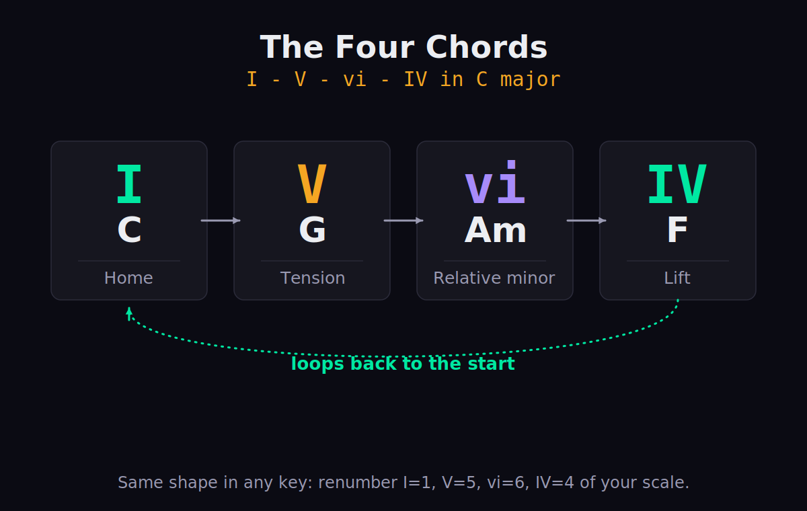
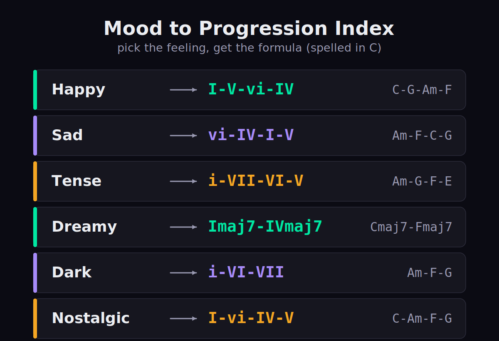
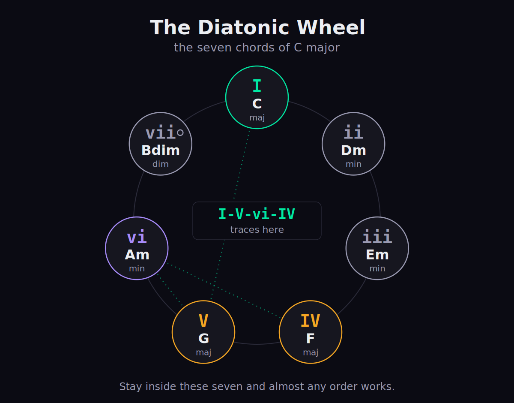

Every other guide to chord progressions teaches you to build one from scratch. Useful — but most of the time you don't want a lesson, you want a progression that already works, dropped into your DAW in the next five minutes. This is that page: a reference library of the progressions that carry most of the music you love, each given in Roman numerals (so it works in any key) and in a worked key (so you can play it right now), with a note on why it lands and where you've heard it. Bookmark it. Steal from it. The deep “how to derive your own” lives in our companion guide, how to make a chord progression — this page is the lookup table that sits next to it.
How To Use This Page (Read This First)
Two ideas unlock everything below. First, Roman numerals describe a progression without locking it to a key. In any major key, number the seven notes of the scale 1–7 and build a chord on each: uppercase numerals (I, IV, V) are major chords, lowercase (ii, iii, vi) are minor, and the small circle (vii°) marks the one diminished chord. So I–V–vi–IV means “the chord built on note 1, then 5, then 6, then 4.” In C major that's C–G–Am–F; in G major the exact same numerals give G–D–Em–C. Learn the numerals once and every progression here transposes to all twelve keys for free. It's the single most useful piece of theory a producer can carry, because it converts a hundred specific chord sequences into a handful of portable shapes.
Second, to move a progression into your key, you don't re-learn it — you renumber it. Pick your key, write out its seven diatonic chords, and swap each numeral for the matching chord. We've spelled every progression below in C major because C is all the white keys — the easiest place to hear what a progression does before you transpose it. When you're ready to move, our Chord & Key Reference tool lists the diatonic chords of every key, and tempo, key & chord reference ties the chords to your track's tempo and key signature so you're working in the right place from the first bar.
Common chord progressions are not copyrightable. A bare sequence like I–V–vi–IV is shared property — thousands of released songs use it, and no one owns it. What copyright protects is a specific melody, lyric, and recording built on top of a progression, not the progression itself. So every formula on this page is yours to use without asking permission or paying anyone. Originality lives in what you put over the chords — the topline, the rhythm, the sound, the arrangement — not in the four chords alone. That's freeing: it means the hard, interesting work is never the progression. It's everything else.
How to read the tables below. Every entry gives you the same three things: the progression in Roman numerals (the portable shape), the same progression spelled in C (so you can play it immediately), and a short note on the feeling it creates or where you've heard it. Scan the numerals when you want to transpose, read the C spelling when you just want to drop it in, and trust the feeling column to point you at the right neighborhood when you only know the mood you're after. Whether you're a topline writer hunting for a bed to sing over, a beatmaker who wants chords under a melody, or a producer reverse-engineering a sound you love, the workflow is the same: find the row that matches your mood or genre, play it in C, then renumber into your key. That's the whole page in one sentence.

The “four chords” map — I–V–vi–IV on the C-major scale, and why the loop wants to repeat.
Why These Progressions Work (The Theory In Plain English)
You can use this page with no theory at all, but a little context makes the patterns stop feeling arbitrary and start feeling inevitable. The chords in a key aren't a random pile — they have jobs, and those jobs are what every progression here is quietly arranging. Music theory calls this functional harmony, and it boils down to three roles.
The I chord is home (the “tonic”): stable, resolved, the place a phrase wants to land and the chord that tells your ear what key you're in. The V chord is tension (the “dominant”): it contains the most restless note in the key, the leading tone a half-step below home, and it pulls hard back toward I. That pull is why the V→I move feels like an arrival rather than just another chord change. The IV chord is a softer kind of motion (the “subdominant”): it opens a phrase outward instead of closing it, the harmonic equivalent of a deep breath before the line resolves. Almost every progression on this page is some ordering of those three poles — depart from home, build tension, come back — with the remaining chords coloring the journey.
The vi chord is the secret weapon in pop. It's the relative minor: it shares all of its notes with I but centers them on a sadder root, so dropping vi into a bright progression adds a flicker of melancholy without ever leaving the key. That single relationship is why I–V–vi–IV feels so emotionally complete — in four bars it visits home, tension, the sad cousin, and the lift, then loops, and the loop never tires because each chord is doing genuinely different emotional work. Minor-key progressions flip the polarity: the i chord becomes a darker home, and borrowing a major V from the harmonic minor gives you a dominant strong enough to pull back to it convincingly. If you want the full grammar — diatonic chords, voice leading, borrowed chords, secondary dominants — that's the job of music theory for producers and the build-it-yourself walkthrough in how to make a chord progression. Here we keep the theory to a working hook and get to the progressions.
One more idea explains why certain moves feel so satisfying: root motion by a falling fifth is the strongest pull in tonal harmony. When the bass drops a fifth from one chord to the next — D to G to C, the roots of ii–V–I — each chord sounds like it's being pulled into the one after it, which is why that cadence feels so conclusive and why jazz chains fifth after fifth to keep the music moving. The same logic powers I–vi–ii–V and the circle-of-fifths sequences underneath a huge amount of music. You don't have to analyze it in the moment; just know that when a progression feels unusually “inevitable,” falling-fifth root motion is usually the reason, and reaching for it is a reliable way to make a sequence feel finished.
The Four Cadences (How A Progression Ends)
A cadence is the way a phrase finishes — the harmonic punctuation mark at the end of a musical sentence. Knowing the four common types is the fastest way to understand why the progressions below feel the way they do, because the last chord move in a loop sets its whole emotional tone. These aren't progressions to copy so much as endings to recognize once and then hear everywhere.
| Cadence | The move | In C | What it feels like |
|---|---|---|---|
| Authentic (perfect) | V–I | G–C | Full stop — complete, conclusive resolution |
| Plagal (“amen”) | IV–I | F–C | Gentle, settled, hymn-like arrival |
| Half | …–V | …–G | A question; suspended, expecting more |
| Deceptive | V–vi | G–Am | A surprise — the resolution you didn't expect |
The authentic cadence (V–I) is the strongest ending in tonal music: the dominant's tension resolves completely to home, which is why it closes so many songs with a sense of finality. The plagal cadence (IV–I) — the “amen” of hymns — resolves more softly, sidestepping the dominant's hard pull for something warmer; it's all over gospel and folk. The half cadence ends a phrase on the V, leaving the tension unresolved like a question mark — perfect at the end of a verse to make you lean into the chorus. And the deceptive cadence (V–vi) sets up the expected V–I landing and then swerves to the relative minor instead, a small heartbreak that great songwriters deploy exactly once for maximum effect. Most of the named loops below are really just these cadences, dressed up and repeated.
The 6 Progressions That Work In Almost Any Song
If you only ever learn six progressions, learn these. Between them they account for an astonishing share of released popular music across every decade and genre, because each one solves a different fundamental problem: how to sound uplifting, how to sound nostalgic, how to resolve convincingly, how to keep three chords interesting for three minutes. Every one is spelled in C major below; renumber for your key.
| Progression | In C major | The feeling | Where it lives |
|---|---|---|---|
| I–V–vi–IV | C–G–Am–F | Uplifting, anthemic, instantly familiar | The modern pop chorus |
| vi–IV–I–V | Am–F–C–G | Bittersweet, yearning, then a lift | Emotional pop & ballads |
| I–vi–IV–V | C–Am–F–G | Sweet, nostalgic, retro | The 50s / doo-wop sound |
| I–IV–V | C–F–G | Plain, strong, resolute | Rock, folk, country, punk |
| ii–V–I | Dm–G–C | Smooth, conclusive, “home” | Jazz & everything it touched |
| 12-bar blues | C7–F7–G7 cycle | Rolling, conversational, call-and-response | Blues & early rock & roll |
I–V–vi–IV is the one to learn first — the so-called “four chords,” the engine of countless arena choruses. It works because it touches every harmonic base in order (home, tension, relative minor, lift) and then resolves back to itself, so it loops forever without feeling repetitive. It's the safest possible bet for an uplifting chorus, which is exactly why it's so common: it is very hard to make it sound bad. The only real risk is that it can sound too familiar, so the work is in the topline and the production sitting on top, not in the chords themselves.
vi–IV–I–V is the same four chords rotated to begin on the minor. That one change — starting in shadow and climbing toward light — is the entire difference between a triumphant chorus and a wistful one, which is why it's the default for emotional pop and ballads. I–vi–IV–V, the 50s progression, carries an unmistakable doo-wop nostalgia from its very first chord; the vi lands early and sweetens everything, making it perfect when you want warmth and innocence rather than power. Both are proof that simply rotating or reordering the same handful of chords is often all it takes to change a song's emotional register completely.
I–IV–V is harmony stripped to the bone: three major chords, maximum strength, zero subtlety — the backbone of rock, folk, country and punk, and living proof that you don't need complexity to write something that hits hard. ii–V–I is the most important cadence in tonal music: ii sets up V, V pulls to I, and the landing feels inevitable because the roots move down by perfect fifths, the strongest root motion there is. Master it and you've understood the spine of jazz, but it also hides inside pop bridges and R&B turnarounds everywhere. Finally, the 12-bar blues isn't four chords but a 12-bar form built from just I, IV and V (almost always as dominant sevenths) — the call-and-response template under blues, early rock and roll, and a surprising amount of everything that followed them.
Because the 12-bar blues is a form rather than a loop, it's worth seeing laid out. The most common version walks twelve bars like this — spelled in C, using dominant sevenths for that bluesy bite:
| Bars 1–4 | Bars 5–8 | Bars 9–12 |
|---|---|---|
| I I I I | IV IV I I | V IV I V |
| C7 C7 C7 C7 | F7 F7 C7 C7 | G7 F7 C7 G7 |
That final V in bar 12 is the turnaround — it kicks the form back to the top for another twelve bars, which is how a blues can roll indefinitely. Master this single grid and you can sit in on almost any blues jam in any key, because everyone in the room is playing the same twelve bars; only the key changes.
Progressions By Mood
Most of the time you don't search for a progression by name — you search for a feeling. Here are reliable starting points grouped by the emotion you're chasing. None of these are rules; they're well-worn doors into a mood, and the chord is only half the story. Pair them with the right melody, tempo and sound design and the feeling does the rest — a “sad” progression played fast and bright can read as triumphant, and a “happy” one slowed to a crawl can ache.

Mood → progression: a quick index from the feeling you want to the formula that gets you there.
Happy & uplifting
Major chords, bright motion, a strong and frequent return home. The classic lift is I–V–vi–IV (C–G–Am–F); for something even sunnier, I–IV–V (C–F–G) drops the lone minor chord entirely, and just rocking I–IV back and forth gives you an endless, carefree loop. Keep the voicings open, the harmonic rhythm steady, and the topline above the chord tones, and the brightness takes care of itself.
| Progression | In C | Why it works |
|---|---|---|
| I–V–vi–IV | C–G–Am–F | The anthem — bright with one touch of shade |
| I–IV–V | C–F–G | All major, all forward motion |
| I–IV | C–F | Two chords, endless sunny loop |
Sad & emotional
Lead with the minor or descend through one. vi–IV–I–V (Am–F–C–G) is the bittersweet pop-sad standard — it begins in melancholy and lifts toward hope, which is why it makes choruses feel earned rather than merely sad. For something darker and purely minor, i–VII–VI (Am–G–F) is a stepwise descent that simply keeps sinking, never quite resolving. And i–iv–VII–III (Am–Dm–G–C) adds a soulful turn that opens onto the relative major at the end, the harmonic equivalent of a tear with a small smile behind it.
| Progression | In C / Am | Why it works |
|---|---|---|
| vi–IV–I–V | Am–F–C–G | Sad start, hopeful resolution — the pop tearjerker |
| i–VII–VI | Am–G–F | A descending minor line that keeps sinking |
| i–iv–VII–III | Am–Dm–G–C | Soulful minor that opens onto the relative major |
Tense & dramatic
For unease and constant forward pull, lean on the Andalusian cadence, i–VII–VI–V (Am–G–F–E) — a descending flamenco line whose final chord is a major V (E major), borrowed from the harmonic minor, which reloads the loop with tension every single time it turns over. A bare i–V oscillation in minor does the same thing on a smaller canvas: two chords that never fully relax. Add chromatic or borrowed chords on top and the drama deepens further; this is the harmonic palette of suspense scores and flamenco alike.
| Progression | In Am | Why it works |
|---|---|---|
| i–VII–VI–V | Am–G–F–E | Andalusian descent; the major V keeps it coiled |
| i–V | Am–E | Two-chord tension that never fully relaxes |
Dreamy & ethereal
Trade plain triads for major-seventh and add-9 voicings and the very same chords begin to float. Imaj7–IVmaj7 (Cmaj7–Fmaj7) is two chords of pure haze, neither one in a hurry to resolve; I–iii–IV (C–Em–F) with added extensions drifts gently without ever feeling like it's arriving anywhere. Here the secret is less the progression than the voicing — open, lush, sustained, with lots of space — which is why this mood pairs so naturally with layered synth pads and slow attack times.
| Progression | In C | Why it works |
|---|---|---|
| Imaj7–IVmaj7 | Cmaj7–Fmaj7 | Maj7 colour suspends the sense of arrival |
| I–iii–IV | C–Em–F | Gentle, floating, never quite landing |
Dark & cinematic
Stay in minor and borrow chords from outside the key for extra weight. i–VI–VII (Am–F–G) is an epic minor loop that powers a great deal of trailer, game and score music because it sounds vast without sounding sad; i–VII–VI–VII (Am–G–F–G) rocks darkly and refuses to resolve, which keeps the tension permanently high. Drop the voicings low, slow the harmonic rhythm right down, and lay a single sustained drone underneath, and these turn from merely sad into genuinely ominous.
| Progression | In Am | Why it works |
|---|---|---|
| i–VI–VII | Am–F–G | Epic, brooding, built for scale |
| i–VII–VI–VII | Am–G–F–G | Dark rocking loop that refuses to resolve |
Progressions By Genre
Genres aren't defined by their chords alone — groove, sound design and arrangement matter every bit as much — but each one has harmonic habits worth knowing. Below is the named formula for each, in Roman numerals and C; for the production techniques that turn a formula into a genre (the swing, the voicings, the layering, the mix), follow the genre links out to the full how-to guides. This page hands you the chords; those teach you the feel. Treat the two as a pair: grab the progression here, learn the production there.
Pop
Pop runs on the universal four and their rotations: I–V–vi–IV and vi–IV–I–V dominate the format because they're maximally singable and emotionally legible to a first-time listener — you can hum the chord changes after a single play. The harmonic craft in pop is deliberately conservative; the innovation goes into the topline, the production and the hook, not the chords. That's not a limitation, it's the brief. Full method: how to make pop music.
Lo-fi & neo-soul
This is where extended chords earn their keep. The signature move is the Royal Road progression, IVmaj7–V7–iii7–vi (Fmaj7–G7–Em7–Am) — lush, wistful, endlessly loopable, and a staple of J-pop and anime scoring long before it became a lo-fi default — alongside jazzy ii7–V7–Imaj7 (Dm7–G7–Cmaj7) movement. The chords are only half of it; the genre comes from the sevenths and ninths, a little behind-the-beat swing, and tape warble. Build the rest in how to make lo-fi beats.
| Progression | In C | Why it works |
|---|---|---|
| IVmaj7–V7–iii7–vi | Fmaj7–G7–Em7–Am | The “Royal Road” — bittersweet and infinitely loopable |
| ii7–V7–Imaj7 | Dm7–G7–Cmaj7 | Jazz cadence with lo-fi extensions |
R&B
Gospel and jazz DNA, smoothed out: Imaj7–vi7–ii7–V7 (Cmaj7–Am7–Dm7–G7) as a circular turnaround that resolves into itself, with sevenths and ninths on nearly every chord and frequent ii–V motion lifted straight from jazz. Modern R&B leans heavily on voicing and feel — the same four chords sound completely different depending on which extensions you stack and how you space them across the keyboard. Go deep on those choices in how to make R&B music and how to make neo-soul.
| Progression | In C | Why it works |
|---|---|---|
| Imaj7–vi7–ii7–V7 | Cmaj7–Am7–Dm7–G7 | Smooth circular turnaround, gospel-soul colour |
Hip-hop & trap
Often the simplest harmony on this entire page: a two-chord minor loop such as i–VI (Am–F) or i–iv (Am–Dm), or even a single sustained minor vamp, because the genre's real interest lives in the drums, the 808 glide, and the melody riding on top. Fewer chords means more space for everything else, which is exactly the point. Borrowed and chromatic chords add menace when you want it. Start with how to make trap beats and the broader how to make a beat.
| Progression | In Am | Why it works |
|---|---|---|
| i–VI | Am–F | Two chords; leaves all the room for the beat |
| i–iv | Am–Dm | Pure minor vamp, dark and open |
House & EDM
Bright, looping, and built for the dancefloor: most often the universal I–V–vi–IV, or a Mixolydian lift using I–bVII–IV (C–Bb–F) for that slightly euphoric, anthem-of-the-summer quality. The progression itself is usually a steady four-bar loop that barely changes — the energy comes from arrangement, filtering, automation and the drop, not from harmonic surprise. Full builds: how to make house music and how to make EDM.
| Progression | In C | Why it works |
|---|---|---|
| I–V–vi–IV | C–G–Am–F | The euphoric four-bar loop |
| I–bVII–IV | C–Bb–F | Mixolydian bVII for an uplifting lift |
Gospel
The richest harmony on the page, and the source material everything else borrows from: constant ii–V–I turnarounds (Dm–G–C), the plagal IV–iv–I “amen” cadence (F–Fm–C) for that signature warm resolve, and long chains of passing and chromatic chords connecting every important chord to the next. Gospel treats harmony as constant motion rather than a static loop — there's almost always a chord moving somewhere. It's the harmonic well that R&B, soul and neo-soul all draw from: how to make gospel music.
| Progression | In C | Why it works |
|---|---|---|
| ii–V–I | Dm–G–C | The turnaround that drives gospel motion |
| IV–iv–I | F–Fm–C | The plagal “amen” resolve |
Jazz
Everything orbits ii–V–I (Dm–G–C), strung together and tonicized through key after key so the music is constantly arriving home in a new place. “Rhythm changes,” I–vi–ii–V (C–Am–Dm–G), is the other great workhorse, and tritone substitutions, altered dominants and extended chords are standard color rather than special effects. Jazz is less about a fixed loop than about fluent movement between tonal centers — the deepest end of harmony here, and the best possible ear-training ground: ear training for producers.
| Progression | In C | Why it works |
|---|---|---|
| ii–V–I | Dm–G–C | The atom of jazz harmony |
| I–vi–ii–V | C–Am–Dm–G | “Rhythm changes” — the standard turnaround |
Make Any Progression Yours
Every formula above is a starting point, not a finish line. A handful of reliable moves take a borrowed progression and make it sound like yours — and none of them require leaving the key or breaking the loop. Reach for one at a time; stacking two or three at once is usually one too many, and the magic of these moves is that each makes a clear, hearable difference on its own.

The diatonic wheel — the seven chords of a key and how the famous progressions move between them.
| Move | What it does | Example |
|---|---|---|
| Add 7ths & 9ths | Turns plain triads into jazzy, soulful color instantly | C→Cmaj7, Am→Am9 |
| Relative substitution | Swap a chord for one sharing two notes — same function, new shade | I↔vi, IV↔ii |
| Borrow a chord (modal interchange) | Pull bVI, bVII or iv from the parallel minor for weight | C…Ab, Bb, Fm |
| Voice-lead & invert | Keep common tones, move the bass smoothly — recolors without changing chords | C/E, G/B |
| Change the harmonic rhythm | Two bars per chord vs one; delay or anticipate a change for tension | — |
| Add a secondary dominant | A V-of-the-next-chord adds pull and momentum | D7→G (V/V) |
The single fastest upgrade is the first one: add sevenths. Take any progression on this page, make every chord a seventh, and you've moved it halfway to jazz, neo-soul or R&B in one stroke — no new chords, just richer ones. The second-fastest is modal interchange, borrowing a chord from the parallel minor, which is how a bright major-key song suddenly turns cinematic for a single bar before snapping back. Voice leading is the most invisible of the moves and often the most powerful: keep the notes that two neighboring chords share in the same place and move only what must move, and a clunky sequence of block chords becomes a smooth, professional-sounding line without changing a single chord symbol. All three are explained in depth, with the theory behind them, in how to make a chord progression; once a progression sounds right, arranging it across a full song is the next step.
From Loop To Song
A great progression is not yet a song — it's one room of one. The reason a four-bar loop can carry three minutes is contrast: songs feel like they're going somewhere when their sections sound meaningfully different from each other, and harmony is one of your strongest tools for creating that difference. The most common approach is to give the verse and chorus different progressions, or the same chords reordered, so the chorus feels like a lift even when the palette barely changes — running I–V–vi–IV in the chorus against vi–IV–I–V in the verse is a textbook way to do exactly that with four chords and no new harmony at all.
Two more levers add motion across a whole track. Harmonic rhythm — how fast the chords change — can speed up into a chorus to raise energy, or slow to a single sustained chord in a breakdown to open space. And modulation, shifting the entire song up a key (often for a final chorus), is the oldest trick in the book for a last-minute surge of lift. You don't need all of these in one song; you need just enough difference between sections that the ear stays curious. The progressions on this page are the raw material; turning them into verses, choruses and bridges that build is the craft covered in how to arrange a song and shaped by the melodies you write over them. The bridge is where this matters most: it's the one section allowed to break the pattern entirely — a new progression, a borrowed chord, a jump to a distant key — precisely because its job is to sound like nowhere else in the song before the final chorus brings you home. Used sparingly, that single moment of harmonic surprise is often what people remember.
Transpose To Your Key (And What's Coming)
Every progression on this page is written in C, but your vocalist, your sample or your favorite synth patch may live somewhere else entirely. Transposing is purely mechanical once you think in numerals: write out the diatonic chords of your target key, then map each Roman numeral to the matching chord. Want I–V–vi–IV in E major? E–B–C#m–A. In F major? F–C–Dm–Bb. The shape and the feeling never change — only the letters do. This is the entire payoff of learning numerals instead of memorizing chords: one shape, twelve keys, no extra work.
Two tools make it instant. Our Chord & Key Reference lays out the diatonic chords of any key so you can read the substitutions straight off the screen; tempo, key & chord reference connects those chords to your project's tempo and key. And if you're writing basslines or checking tuning, note to frequency ties any chord tone to its exact pitch in Hz. We're also building a dedicated Chord Progression Library tool — pick any progression here, transpose it to any key, and audition it in the browser at a click. It's on the roadmap; this page is the reference it grows out of.
Bookmark this page and the Chord & Key Reference together. One gives you the progression; the other gives you the chords in your key. That's a complete writing setup in two browser tabs. For the underlying terms, the Bible defines chord progression, chord, harmony, key and scale if you want the precise definitions behind the numerals.
Common Mistakes (And How To Dodge Them)
A progression that works on paper can still sound wrong in a track, almost always for one of a few reasons. None of these are about choosing “better” chords — they're about how you deploy the ones you have.
Resolving too early and too often. If every phrase runs home to I right away, the music never builds any tension to release, and it sags. Let a progression sit on the V or the IV, or end a verse on a half cadence, so the chorus has somewhere to arrive. Clunky voice leading. Playing every chord as a root-position block in the same octave makes the harmony lurch from one shape to the next. Keep shared notes in place and move the rest the shortest distance — the chords don't change, but the line suddenly sounds intentional. Over-extending everything. Sevenths and ninths add color, but stack tensions on every chord and the harmony turns to mush with no contrast left; save the lush voicings for the moments that matter. And ignoring the bass. The lowest note defines the chord as much as the symbol does — an inversion like C/E or G/B can smooth a bassline into a stepwise descent and completely change how a familiar progression feels.
Treating the progression as the song. The chords are the floor, not the building. If a loop feels boring, the fix is almost never “find fancier chords” — it's a better melody, more contrast between sections, a stronger groove, or smarter arrangement. Spend your energy there, and four plain chords will carry you further than twelve clever ones.
Put It Into Practice
Reading progressions isn't the same as owning them. Three short drills, in order of difficulty, move these from a list you scanned to a vocabulary you can write with from memory — which is the whole point of a reference like this one.
- In your DAW's piano roll, program each of the six universal progressions as block triads in C major, one bar per chord.
- Loop each for a minute and name the feeling out loud — uplifting, nostalgic, conclusive — so you start linking the sound to the formula.
- Pick the one that moved you most and write an eight-bar idea over it. Don't overthink the chords; they already work.
- Take I–V–vi–IV and, using the Chord & Key Reference, write it out in C, G and E from the numerals alone.
- Play all three and notice how the same progression changes character with register and key — brighter, fuller, more strained.
- Repeat with a minor progression (i–VII–VI) in A minor, E minor and C minor until renumbering feels automatic.
- Take any progression here and apply one move from the table above: make every chord a seventh, or borrow a bVI from the parallel minor.
- Then apply a second, different move — a relative substitution or a secondary dominant — and compare it to the original.
- Decide which version actually serves your song, and articulate why. That judgment, not the trick, is the real skill.
Frequently Asked Questions
The most common is I–V–vi–IV (C–G–Am–F in C major). It appears across more popular songs than any other progression because it touches home, tension, the relative minor and the lift in four bars, then loops without tiring. Rotations like vi–IV–I–V use the same four chords for a more emotional feel.
No. Common chord progressions are not copyrightable — a bare sequence like I–V–vi–IV is shared property used in thousands of songs, and no one owns it. Copyright protects a specific melody, lyric and recording built on top of a progression, not the progression itself, so you can use any progression on this page freely.
vi–IV–I–V (Am–F–C–G) is the bittersweet pop-sad standard — it starts in melancholy and lifts toward hope. For something darker and purely minor, i–VII–VI (Am–G–F) is a descending line that keeps sinking. Slower tempos and minor keys deepen the effect.
The seven diatonic chords of a single key are built to sound good together: in C major that is C, Dm, Em, F, G, Am and B diminished. Pick a key, stay mostly within its diatonic chords, and almost any order will work — the progressions on this page are simply the most reliable orders.
It is I–V–vi–IV and its rotations (vi–IV–I–V, IV–I–V–vi). The same four chords reordered underpin a huge share of pop, because each rotation creates a different emotional arc from one familiar, singable set of chords.
I–vi–IV–V (C–Am–F–G), also called the doo-wop progression. The early vi chord gives it a sweet, nostalgic quality, which is why it defines the sound of 1950s pop and still reads as retro today.
ii–V–I (Dm–G–C in C) is the strongest cadence in tonal music: ii sets up the dominant V, which resolves to home, with the roots falling by fifths for maximum pull. It is the foundation of jazz and hides inside countless pop and R&B turnarounds.
IVmaj7–V7–iii7–vi (Fmaj7–G7–Em7–Am in C). A lush, bittersweet sequence common in J-pop, anime scores and lo-fi. Its seventh chords and gentle descent make it endlessly loopable.
A descending minor progression, i–VII–VI–V (Am–G–F–E in A minor). The final chord is a major V borrowed from the harmonic minor, which loads the loop with tension. It is the flamenco sound, also common in dramatic and Spanish-flavored music.
Think in Roman numerals. Write out the diatonic chords of your target key, then map each numeral to its chord. I–V–vi–IV is C–G–Am–F in C and E–B–C#m–A in E. The shape never changes; only the letters do. A chord-and-key reference tool makes it instant.
I–V–vi–IV in C major (C–G–Am–F) — all four are easy white-key chords, and the progression sounds good in almost any order. Start there, loop it, and write a melody on top before worrying about anything more advanced.
Technically unlimited, but in practice a small handful do most of the work. A dozen or so progressions — the six universal ones plus a few per mood and genre — cover the overwhelming majority of popular music. Mastering those gives you more than enough to write with.